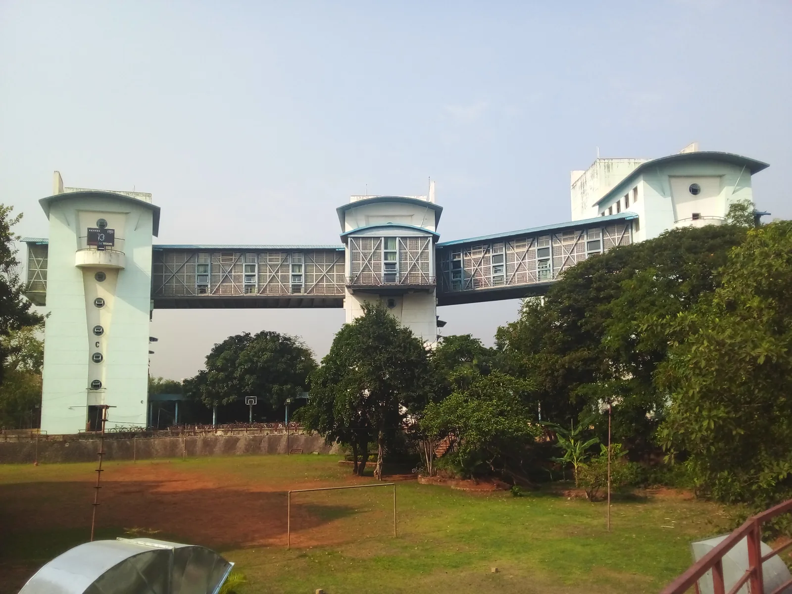
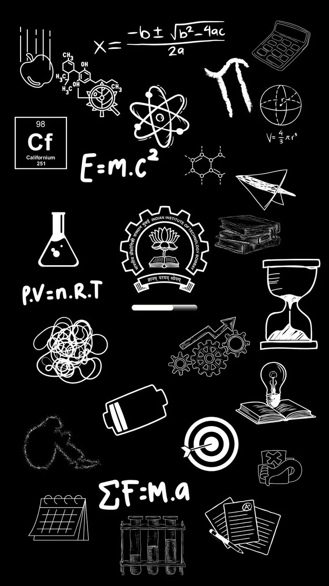

Search, do not scroll forever
Senior profiles and food places can be filtered instantly.
MSc Physics · IIT Bombay
A visual, student-made field guide to courses, CPI, monsoons, food, clubs, seniors, travel and the contacts that matter when things go wrong.

Choose what you need
Related information now lives together, so freshers can understand a topic without jumping between pages.
First-semester courses, book recommendations, grades, CPI and a working SPI calculator—in one focused workspace.

↗Food, monsoon survival, room essentials and the practical things no brochure tells you.
Browse real internships, research paths, PoRs and hobbies. Search by person, institute or interest.
 ↗
↗Find cultural, technical and sports communities before orientation-week information overload begins.
 ↗
↗Arrival routes from airports, railway stations and Mumbai local lines—especially when you have too much luggage.
Security, QRT, hospital, ambulance, fire and urgent campus contacts. Built to be readable under stress.
Better first-week experience
Senior profiles and food places can be filtered instantly.
Mark monsoon and room essentials as you pack.
Estimate your SPI directly on the Academics page.
Every card tells the student what they can do next.